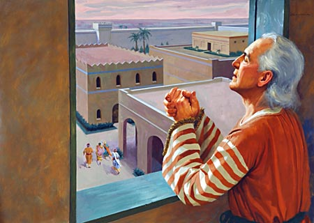

Daniel Chapter Six
Back to contents
Daniel in the lion's den
"VERSE 1. It pleased Darius to set over the kingdom an hundred and twenty princes, which should be over the whole kingdom; 2. And over these three presidents; of whom Daniel was first; that the princes might give accounts unto them, and the king should have no damage. 3. Then this Daniel was preferred above the presidents and princes, because an excellent spirit was found in him; and the king thought to set him over the whole realm. 4. Then the presidents and princes sought to find occasion against Daniel concerning the kingdom; but they could find none occasion nor fault; forasmuch as he was faithful, neither was there any error or fault found in him. 5. Then said these men, We shall not find any occasion against this Daniel, except we find it against him concerning the law of his God."
When the Medo-Persians defeated Babylon, Darius was placed on the throne. Two years later, he died and Cyrus took over the throne. This event is therefore narrated in the period before the death of Darius. It is supposed that Darius’ empire had 120 provinces and each province had a governor. Over the 120 provinces were 3 presidents and Daniel was chief of them. He was made so since an excellent spirit was found in him. The envy of other rulers was aroused against him and they decided to destroy him. However, they couldn’t found any ground to accuse him since he was faithful in all his duties. They could find ground against him only concerning the law of God.
"VERSE 6. Then these presidents and princes assembled together to the king, and said thus unto him, King Darius, live forever. 7. All the presidents of the kingdom, the governors, and the princes, the counselors, and the captains, have consulted together to establish a royal statute, and to make a firm decree, that whosoever shall ask a petition of any God or man for thirty days, save of thee, O king, he shall be cast into the den of lions. 8. Now, O king, establish the decree, and sign the writing, that it be not changed, according to the law of the Medes and Persians, which altereth not. 9. Wherefore king Darius signed the writing and the decree. 10. Now when Daniel knew that the writing was signed, he went into his house; and his windows being open in his chamber toward Jerusalem, he kneeled upon his knees three times a day, and prayed, and gave thanks before his God, as he did aforetime."
The rulers came to the king ‘tumultuously’ as the margin states, as if they had an urgent matter to present before the king. They claimed that they had agreed unanimously to present it to the king but this was a lie because Daniel, the chiefest of them all, was not consulted. The king signed the decree and it became an unalterable law according to the statue book of the Medes and Persians. Daniel knew the conspiracy against him but he left the issue with his God. Just as before, he prayed three times a day with the windows open and his face turned towards Jerusalem.
"VERSE 11. Then these men assembled, and found Daniel praying and making supplication before his God. 12. Then they came near, and spake before the king concerning the king's decree: Hast thou not signed a decree, that every man that shall ask a petition of any God or man within thirty days, save of thee, O king, shall be cast into the den of lions? The king answered and said, The thing is true according to the law of the Medes and Persians, which altereth not. 13. Then they answered and said before the king, That Daniel, which is of the children of the captivity of Judah, regardeth not thee, O king, nor the decree that thou hast signed, but maketh his petition three times a day. 14. Then the king, when he heard these words, was sore displeased with himself, and set his heart on Daniel to deliver him; and he labored till the going down of the sun to deliver him. 15. Then these men assembled unto the king, and said unto the king, Know, O king, that the law of the Medes and Persians is, That no decree or statute which the king establisheth may be changed. 16. Then the king commanded, and they brought Daniel, and cast him into the den of lions. Now the king spake and said unto Daniel, Thy God, whom thou servest continually, he will deliver thee. 17. And a stone was brought, and laid upon the mouth of the den; and the king sealed it with his own signet, and with the signet of his lords, that the purpose might not be changed concerning Daniel."

These men came again tumultuously together, this time at the place of Daniel’s residency, as if some important business had called them suddenly together to consult the chief of the presidents. As they intended and hoped, they found him praying to his God. They presented the matter before the king who having failed to deliver him, ordered that he, the faultless and upright servant of the kingdom, should be thrown into the den of lions.
"VERSE 18. Then the king went to his palace, and passed the night fasting; neither were instruments of music brought before him; and his sleep went from him. 19. Then the king arose very early in the morning, and went in haste unto the den of lions. 20. And when he came to the den, he cried with a lamentable voice unto Daniel; and the king spake and said to Daniel, O Daniel, servant of the living God, is thy God, whom thou servest continually, able to deliver thee from the lions? 21. Then said Daniel unto the king, O king, live forever. 22. My God hath sent his angel, and hath shut the lions' mouths, that they have not hurt me; forasmuch as before him innocency was found in me; and also before thee, O king, have I done no hurt. 23. Then the king was exceedingly glad for him, and commanded that they should take Daniel up out of the den. So Daniel was taken up out of the den, and no manner of hurt was found upon him, because he believed in his God. 24. And the king commanded, and they brought those men which had accused Daniel, and they cast them into the den of lions, them, their children, and their wives; and the lions had the mastery of them, and brake all their bones in pieces or ever they came at the bottom of the den."
Here, then, stood Daniel, preserved by a power higher than any power of earth. His cause was vindicated, his innocency declared. No hurt was found on him, because he believed in his God. Faith did it. A miracle had been wrought. Why then were Daniel’s accusers cast into the den? Perhaps they attributed the preservation of Daniel not to the miracle but to the fact that the lions were not hungry. Daniel should therefore be thrown into the den later when the lions are hungry. Then, said the king, they will no more longer attack you than him, so we will test the matter by putting you in. The lions were hungry enough when they could get hold of the guilty and the men were torn into pieces before they reached the bottom of the den and the words of Solomon were fulfilled: "The righteous is delivered out of trouble, and the wicked cometh in his stead." Prov.11:8.
"VERSE 25. Then king Darius wrote unto all people, nations, and languages, that dwell in all the earth: Peace be multiplied unto you. 26. I make a decree, That in every dominion of my kingdom men tremble and fear before the God of Daniel; for he is the living God, and steadfast forever, and his kingdom that which shall not be destroyed, and his dominion shall be even unto the end. 27. He delivereth and rescueth, and he worketh signs and wonders in heaven and in earth, who hath delivered Daniel from the power of the lions. 28. So this Daniel prospered in the reign of Darius, and in the reign of Cyrus the Persian."
We see that the seal of God is set in the favour of:
- Those who don’t yield to any known sin
- Those who don’t omit any known duty
From the decree, we learn the character of God as:
- He is the living God; all others are dead.
- He is steadfast forever; all others change.
- He has a kingdom; for he made and governs all.
- His kingdom shall not be destroyed; all others come to an end.
- His dominion is without end; no human power can prevail against it.
- He delivers those who are in bondage.
- He rescues his servants from their enemies when they call upon him for help.
- He works wonders in the heavens and signs upon the earth.
- And to complete all, he has delivered Daniel, giving before our own eyes the fullest proof of his power and goodness in rescuing his servant from the power of the lions.
Thus closes the historical part of the book of Daniel and the prophetic part begins, which lights the path of the church onward to the eternal kingdom.